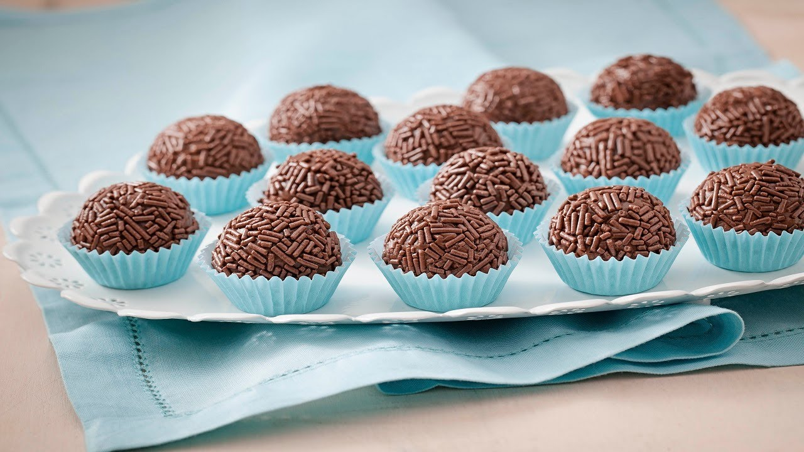

HOME
Brigadeiro

Traditional desert from brazil
brigadeiro is one of the most famous desert on brazil
and today we are going to learn how to prepare a delicious homemade brigadeiro!
Ingredients you will need
- box of condensed milk
- spoon of unsalted butter
- chocolate powder
- chocolate sprinkles
step by step (feel free to translate from portugues brazil to engish):
- Em uma panela funda, acrescente o leite condensado, a margarina e o chocolate em pó.
- Cozinhe em fogo médio e mexa até que o brigadeiro comece a desgrudar da panela.
- Deixe esfriar e faça pequenas bolas com a mão passando a massa no chocolate granulado.